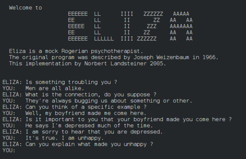
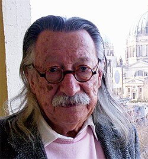

In the modern era, we are surrounded by Large Language Models (LLMs) that act as our personal assistants, creative partners, and even romantic companions. While the underlying technology has shifted from simple pattern matching to multi-billion parameter neural networks, our psychological reaction remains remarkably unchanged. We are still caught in the "ELIZA Effect"—a phenomenon first observed in a computer lab over sixty years ago, proving that our profound emotional attachment to AI began with a mere 200 lines of code.
In 1964, MIT professor Joseph Weizenbaum embarked on a project to explore the communication between man and machine. Operating within MIT's Project MAC on an IBM 7094 mainframe running the Compatible Time-Sharing System (CTSS), he created ELIZA, the world’s first chatterbot. He programmed it in MAD-SLIP (Symmetric LIst Processor), a language that allowed for complex string manipulation.
Named after Eliza Doolittle from George Bernard Shaw's Pygmalion—a character taught to speak proper English to create the illusion of high society—the program was designed to demonstrate that conversation between humans and computers was essentially superficial. To Weizenbaum's shock and eventual horror, it proved the exact opposite: people were desperate to believe the machine truly understood them.

ELIZA’s most famous persona was the DOCTOR script, which simulated a Rogerian psychotherapist. This was a stroke of genius. Rogerian therapy is "non-directive," meaning the therapist primarily reflects the patient's own statements back to them as questions. This allowed ELIZA to maintain the illusion of deep understanding without possessing any actual knowledge of the world.
If a user typed, "I am feeling very sad today," ELIZA would search for the keyword "I am" and the subject "sad," applying Lisp-like decomposition rules to parse the input. It would then use reassembly rules to transform the sentence into: "Why do you say you are feeling very sad today?" It was a remarkably simple trick of syntax—the entire script was only about 200 lines long—yet it was incredibly effective. When no recognizable keyword was found, it fell back on generic prompts like "Please go on" or "Tell me more about that."
"I was startled to see how quickly very sophisticated people became emotionally involved with the computer and how unequivocally they anthropomorphized it."
— Joseph Weizenbaum
The program sparked intense emotional connections. Weizenbaum’s own secretary, who had watched him build the software and knew exactly how the code operated, reportedly asked him to leave the room so she could have a private conversation with the machine.

This powerful psychological phenomenon came to be known as the "ELIZA Effect": our innate tendency to project human-level intelligence, intent, and empathy onto computer programs based on superficial behavioral cues. Our brains are deeply wired to interpret language through a social lens. When a machine mimics human conversation, we instinctively experience the illusion of a sentient presence.
Weizenbaum was deeply disturbed by the "delusional thinking" his simple program had induced. He spent the rest of his life warning against this "artificial credibility." In his 1976 book Computer Power and Human Reason, he argued that while computers excel at calculation, they completely lack judgment—a quality rooted solely in human experience, suffering, and empathy. He believed that applying computers to areas requiring human empathy, such as psychotherapy or judicial sentencing, was fundamentally immoral.
Today, as we engage with ChatGPT and other advanced LLMs that generate highly coherent and seemingly empathetic text, the ELIZA Effect has scaled globally. While today's neural networks are infinitely more complex than SLIP pattern-matching rules, the psychological hook is identical. The effect reveals itself when users mourn "dead" AI companions after a server shutdown, or when they over-rely on authoritative-sounding but hallucinated advice.
ELIZA serves as a powerful historical anchor. It reminds us that our impulse to form emotional bonds with our creations is not a modern vulnerability brought on by advanced algorithms, but a deeply embedded human trait. A mirror doesn't need to be intelligent to show us something we desperately want to see.